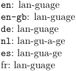
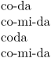
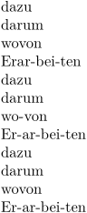
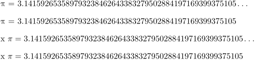
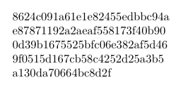

- For hyphens in compound words, see Compound words .
When a word extends beyond the end of a line, it can be broken in the middle and written on two lines, with a hyphen to indicate the breakoff. This is called hyphenation. ConTeXt has a great many facilities for dealing with hyphenation, both automatically and manually; they are gathered on this page.
Contents
- 1 Define the language for the whole document
- 2 Change the hyphenation language
- 3 Display languages and hyphenation points
- 4 Minimum length for hyphenation
- 5 Allow breaking at existing hyphens
- 6 Specify how to break a word
- 7 Prevent hyphenation locally
- 8 Tune the auto-hyphenation algorithm
- 9 Penalize consecutive hyphens
- 10 Mark hyphenated lines for review
- 11 Hyphenate numbers and other non-words
- 12 Underscore Hyphenation for SHA
- 13 See also
Define the language for the whole document
\mainlanguage[nl] would be the way to set the language for the whole document to Dutch.
The default language is US English.
Change the hyphenation language
Use \language[de]. NB: this will also alter the marks used for \quotation, etc.
A shortcut for German would be \de. Italian has no shortcut in \it (which is reserved for italics) and Finnish has no shortcut for \fi is the command to end conditionals.
Another way of marking a passage would be \startlanguage[es] and \stoplanguage.
Display languages and hyphenation points
\currentmainlanguage prints the main language and \currentlanguage displays the language in use (which may not be the same as the main language).
\hyphenatedword prints the hyphenation points given the current language patterns.
-
{\tt\currentlanguage}: \hyphenatedword{language}\\ \uk{\tt\currentlanguage}: \hyphenatedword{language}\\ \de{\tt\currentlanguage}: \hyphenatedword{language}\\ \nl{\tt\currentlanguage}: \hyphenatedword{language}\\ \es{\tt\currentlanguage}: \hyphenatedword{language}\\ \fr{\fr\currentlanguage}: \hyphenatedword{language}
- 
Minimum length for hyphenation
Hyphenation works in each language because it has defined the minimum number of letters to apply a hyphenation pattern. It applies at the word start (lefthyphemin) or at the word end (righthyphemin).
There is a third option to set the minimal number of letters the word needs to be hyphenated (hyphemin).
You can set that with \setuplanguage, such as in \setuplanguage[es][hyphenmin=5]. This would enable some hyphenations and prevent others.
-
\mainlanguage[es] \hyphenatedword{coda}\\ \hyphenatedword{comida}\\ \setuplanguage[es][hyphenmin=5] \hyphenatedword{coda}\\ \hyphenatedword{comida}\\
- 
This seems to be very useful in German:
-
\mainlanguage[de] \hyphenatedword{dazu}\\ \hyphenatedword{darum}\\ \hyphenatedword{wovon}\\ \hyphenatedword{Erarbeiten}\\ \setuplanguage[de][lefthyphenmin=2,righthyphenmin=3] \hyphenatedword{dazu}\\ \hyphenatedword{darum}\\ \hyphenatedword{wovon}\\ \hyphenatedword{Erarbeiten}\\ \setuplanguage[de][lefthyphenmin=2,righthyphenmin=3, hyphenmin=6] \hyphenatedword{dazu}\\ \hyphenatedword{darum}\\ \hyphenatedword{wovon}\\ \hyphenatedword{Erarbeiten}\\
- 
Allow breaking at existing hyphens
To allow breaking at hyphens, slashes, etc., write \setbreakpoints[compound] at the start of your document.
Specify how to break a word
Write \hyphenation{po-ly-syl-lab-ic} at the start of your document. (This will not be remembered across documents.)
Use the \- command. poly\-syllabic.
To never break a word, write \hyphenation{polysyllabic}.
Prevent hyphenation locally
There are two ways to prevent a word from being hyphenated: the traditional \hbox and the more natural command \unhyphenated.
\hbox{myfragileword} % old-fashioned \unhyphenated{myfragileword} % MkIV, since 2013-04-21
Tune the auto-hyphenation algorithm
Use the \setupalign parameters concerning justification and hyphenation.
Penalize consecutive hyphens
To penalize hyphens on consecutive lines, set \doublehyphendemerits. Its default value is 10000; to double that, write \doublehyphendemerits=20000.
Mark hyphenated lines for review
See the article on reviewing hyphenation.
Hyphenate numbers and other non-words
Use \hyphenateddigits; it works in text and math mode and is available since 2021-01-28 (i.e. not yet in the wiki at the time of writing).
-
\pi\ = \hyphenateddigits[\unknown]{3.141592653589793238462643383279502884197169399375105} \blank \pi\ = \hyphenateddigits{3.141592653589793238462643383279502884197169399375105} \blank x $\pi = \hyphenateddigits[\unknown]{3.141592653589793238462643383279502884197169399375105}$ \blank x $\pi = \hyphenateddigits{3.141592653589793238462643383279502884197169399375105}$ \blank
- 
Underscore Hyphenation for SHA
The following sample deals with underscore hyphenation for SHA output (works with ConTeXt versions from 2021.05.15 22:45).
-
\startluacode function document.addfunnyhyphen(tfmdata) local underscore = utf.byte("_") local char = tfmdata.characters[underscore] if not char then return end tfmdata.characters[0xFE000] = { width = 0, height = 0, depth = 0, commands = { { "right", -char.width }, { "down", char.depth }, { "slot", 1, underscore }, } } end utilities.sequencers.appendaction("aftercopyingcharacters", "after","document.addfunnyhyphen") local shared = { start = 1, length = 1, before = utf.char(0xFE000), after = nil, left = false, right = false, } local all = table.setmetatableindex({ }, function(t,k) return shared end) languages.hyphenators.traditional.installmethod("sha", function(dictionary,word,n) return all end) \stopluacode \definehyphenationfeatures [sha] [characters=all, alternative=sha, righthyphenchar="FE000] \sethyphenationfeatures[sha] \setuphyphenation[method=traditional] \ctxlua{require("util-sha")} \def\hashfivefile#1{% \ctxlua{context(utilities.sha2.hash512("#1"))}} \starttext \startTEXpage[offset=1em, width=15em] \hashfivefile{ConTeXt} \stopTEXpage \stoptext
- 
See also
- Hyphenation
- \hyphenation to define the hyphenation of a specific word
- \startexceptions to define language-specific hyphenations
- \- to define an ad-hoc breakpoint
- \unhyphenated to prevent hyphenation
- \doublehyphendemerits to penalize hyphenation on consecutive lines
- \setupalign justification parameters to tweak the auto-hyphenation algorithm
- \definebreakpoints to initialize a breakpoint set
- \definebreakpoint to add to a breakpoint set
- \setbreakpoints to activate a breakpoint set
- \language to activate a language's settings, including hyphenation
- Wrapping